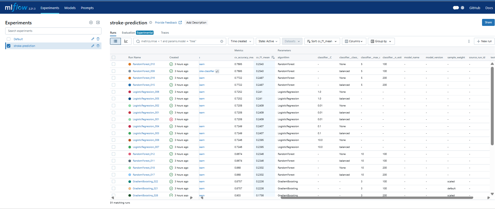
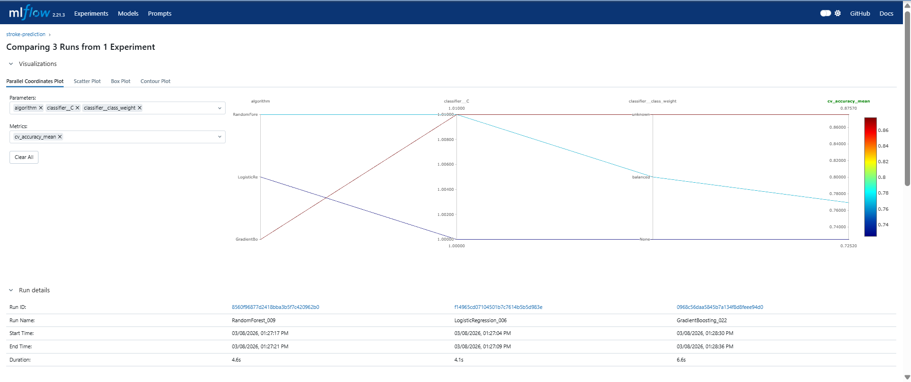
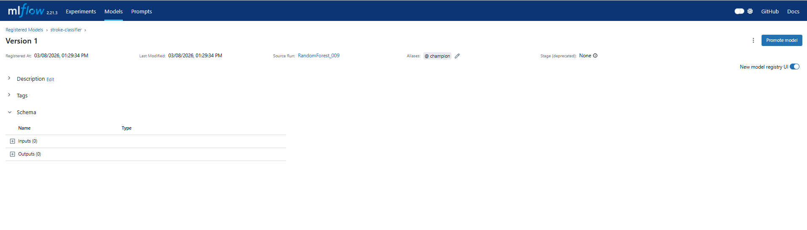
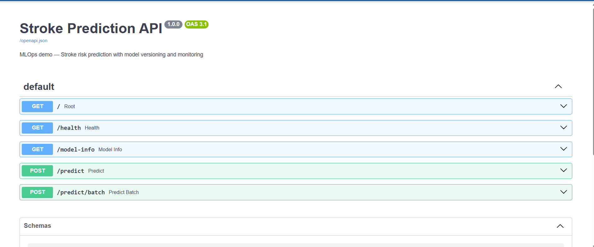
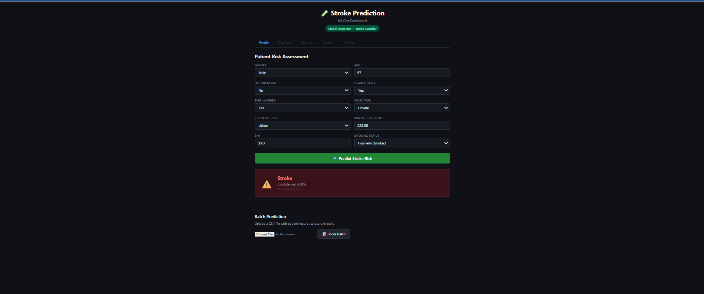
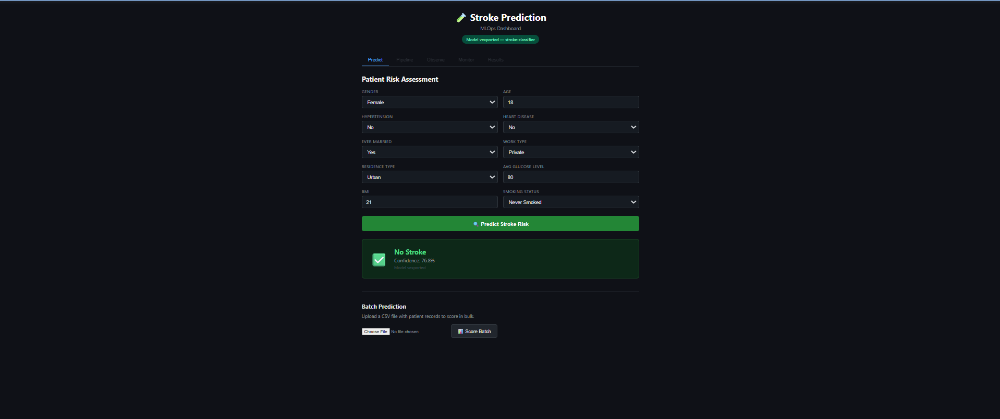
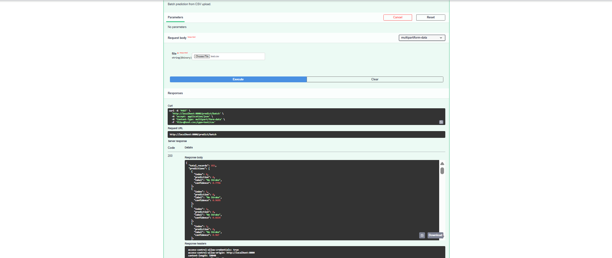
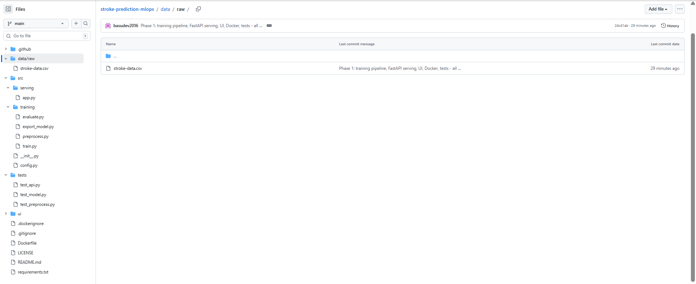
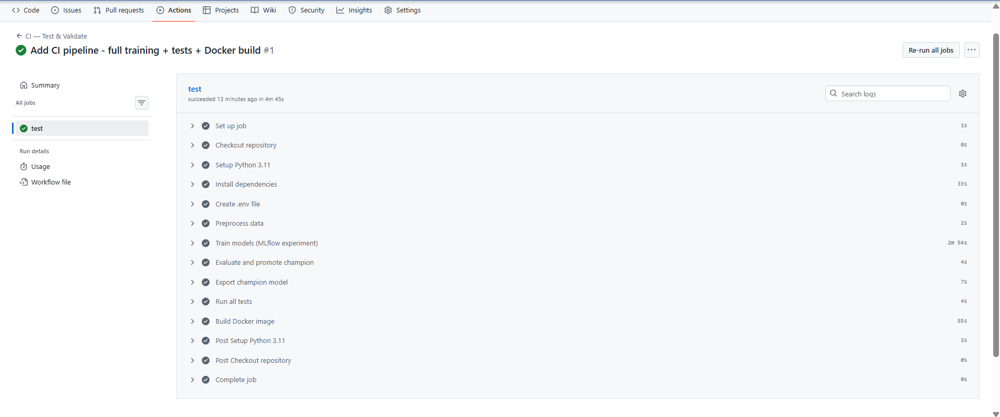
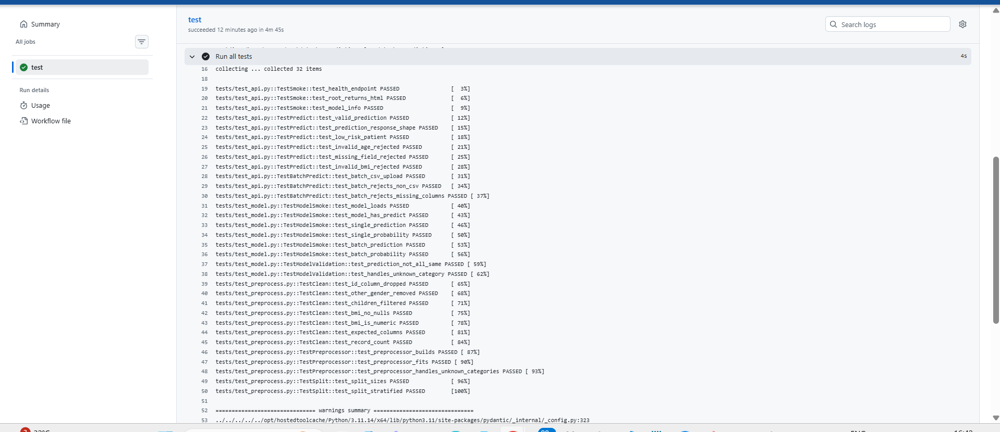

From Jupyter Notebooks to Production Systems
Your student builds a brilliant model. Gets 95% accuracy. Gets an A+ grade. Then what?
The model lives in a Jupyter notebook on someone's laptop. Nobody can use it. Nobody can reproduce it. When the data changes, nobody retrains it. When it breaks in production, nobody knows.
The model is tracked, versioned, tested, containerized, deployed as an API, monitored for drift, and automatically retrained when needed. Every decision is auditable. Every experiment is reproducible.
MLOps is to Machine Learning what DevOps is to Software Engineering.
Every model run is logged — parameters, metrics, artifacts. Nothing is lost. Everything is comparable.
Models are versioned like code. You can roll back, compare, and promote models through stages.
Push code → tests run → model deploys. No manual SSH, no "works on my machine" problems.
The system watches itself. When data drifts or predictions degrade, alerts fire automatically.
Every production ML system follows this cycle. Today we'll walk through each stage with a real project.
Tomorrow we add: Docker → CI/CD → Cloud Deployment → Monitoring
A binary classification model that predicts whether a patient is at risk of stroke, based on clinical and demographic features.
| Source | Kaggle Healthcare Dataset |
| Records | 5,110 patients |
| After cleaning | 4,253 adults (age ≥ 18) |
| Target | Stroke (Yes/No) |
| Class balance | 94.2% No Stroke / 5.8% Stroke |
| Numerical | Age, BMI, Avg Glucose Level |
| Binary | Hypertension, Heart Disease |
| Categorical | Gender, Marital Status, Work Type, Residence, Smoking Status |
Missing BMI values imputed with median. Categorical features one-hot encoded. Class imbalance handled with SMOTE oversampling.
Instead of manually tuning one model, we systematically explore 28 configurations across 3 algorithms — and track every single one.
| Algorithm | Hyperparameters Varied | Runs |
|---|---|---|
| Logistic Regression | C (regularization), class weight | 8 |
| Random Forest | n_estimators, max_depth, class weight | 12 |
| Gradient Boosting | n_estimators, max_depth, sample weight | 8 |
Every run is logged to MLflow — parameters, metrics, model artifacts, confusion matrices. Nothing is lost.
All 28 runs, sortable by any metric. The best model rises to the top. Every decision is traceable.

28 model runs tracked with parameters, metrics, and artifacts — sorted by F1 score. RandomForest_009 leads with F1 = 0.2543
💡 Without MLflow: These 28 experiments would be lost in terminal output. With MLflow, every run is permanently recorded, comparable, and reproducible.
Select any runs and compare — metrics, parameters, and artifacts laid out for direct comparison.

Logistic Regression vs Random Forest vs Gradient Boosting — same data, different approaches, all tracked
The best model is registered, versioned, and given a "champion" alias. Any application can now load the current production model by name — not by file path.

Best model from experiments gets registered with a name: stroke-classifier
Each registration creates a new version (v1, v2, v3...). Old versions are preserved.
After evaluation passes quality gates, the model gets the champion alias. The API always loads the champion.
Models don't get promoted by humans clicking buttons. The evaluation pipeline decides based on metrics thresholds.
| F1 Score | 0.1893 |
| Precision | 0.1186 |
| Recall | 0.4694 |
| ROC AUC | 0.7485 |
| Accuracy | 0.7685 |
💡 Why is F1 low? With 5.8% stroke rate, this is a hard problem. The model favors recall (catching strokes) over precision. This is exactly why monitoring matters — we need to know when performance degrades further.
The model is now accessible to any application — web apps, mobile apps, other services — via a REST API.

Send patient data as JSON → receive stroke risk prediction with confidence score and model version
Single patient — send JSON, get instant prediction with confidence score.
Upload a CSV of hundreds of patients — get all predictions in one call.
Health check — confirms model is loaded, returns version. Used by monitoring systems.
A web interface that connects to the API — allowing clinical staff or researchers to assess stroke risk interactively.

87-year-old male, heart disease, smoker → Stroke risk detected

25-year-old female, no risk factors → No stroke risk

Every piece of code is in GitHub. Every push triggers automated validation — 32 tests ensure nothing breaks.



CI Pipeline: Install → Preprocess → Train 28 models → Evaluate → Export → Run 32 tests → Build Docker image — all automated
Every tool in today's demo — and what gets added tomorrow.
| Data Processing | Pandas Scikit-learn |
| Model Training | Scikit-learn SMOTE |
| Experiment Tracking | MLflow |
| Model Registry | MLflow Registry |
| API Serving | FastAPI |
| Frontend | Vanilla JS |
| Version Control | GitHub |
| Testing | Pytest |
| Containerization | Docker |
| CI/CD | GitHub Actions |
| Infrastructure as Code | Terraform |
| Cloud Deployment | Google Cloud Run |
| Event Pipeline | Cloud Functions |
| ML Monitoring | Evidently AI |
| Observability | GCP Monitoring |
| Alerting | Email Alerts |
Everything we built today goes to the cloud.
Thank you! Questions are welcome.